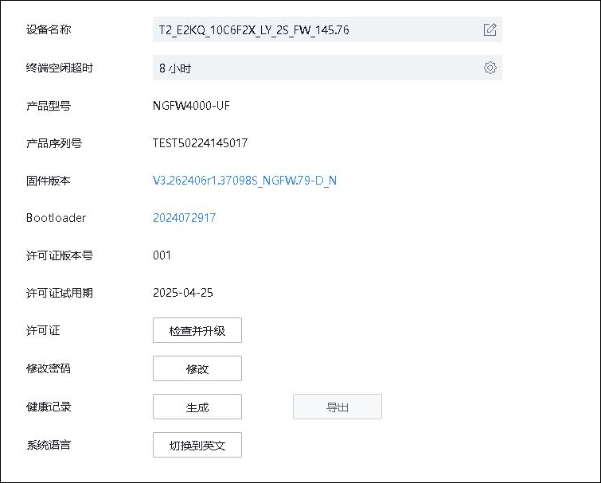
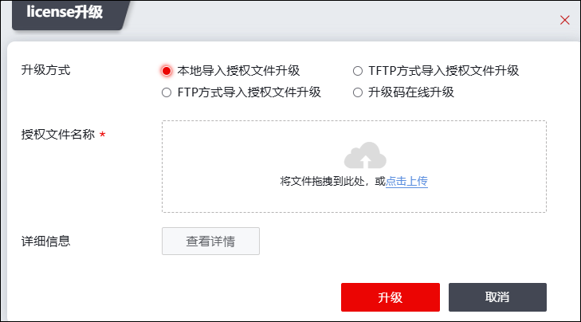

选项界面主要显示了系统的基本信息以及许可证升级、密码修改、健康记录等。
| 步骤1 | 选择 系统管理 > > ，如下图所示。 |

界面中显示了设备的产品名称、终端空闲时间、产品型号、序列号、固件版本等信息。
| 步骤2 | 点击“”可以手动设置设备名称。 |
| 步骤3 | 点击“”可以手动设置终端空闲超时时间。 |
| 步骤4 | license升级 |
License，又称许可证，是用来管理和控制天融信NGFW的部分功能以及服务使用的一类文件。对于非全部用户都有权使用的受限制模块，许可证可授予相关权限。通过升级License可修改产品的功能开启状态。客户在购买License后，可使用License升级功能，将License写入设备，激活相应的功能。
NGFW支持四种License升级方式，分别为FTP升级、TFTP升级、本地升级和升级码在线升级，管理员可以根据需要选择合适的升级方式。
FTP升级：FTP升级指从指定的FTP服务器升级；如果FTP服务器设置了密码，需要填写用户名和密码。
TFTP升级：TFTP升级指从指定的TFTP服务器升级。
本地升级：当NGFW与Internet物理隔离，且没有部署升级服务器时，可以采用本地升级方式。升级前需要将用于升级的License文件保存到管理主机，再通过WebUI登录到NGFW设备，选择License文件进行升级。
升级码升级：当盒式网安设备可以与天融信许可证管理系统通信时，可以通过在线激活，通过输入许可证激活码，远程从许可证管理系统获取到License文件进行激活。
1）点击【检查并升级】按钮，可升级license，如下图所示。

在配置升级license文件时，各项参数的具体说明如下表所示。
参数 |
说明 |
|
|---|---|---|
升级方式 |
设置自动更新方式。可选项：本地、TFTP、FTP和升级码在线升级。 本地：从管理主机上获取License文件。 TFTP：从指定的TFTP服务器地址下载License文件 FTP：从指定的FTP服务器地址下载License文件。 升级码：从许可证管理系统获取到License文件进行激活。 |
|
本地 |
许可证名称 |
点击【点击上传】按钮，选择主机上保存的License文件。 |
FTP |
服务器地址 |
设置FTP服务器的地址。 |
许可证名称 |
设置License文件名称。 |
|
用户名 |
设置登录FTP服务器的用户名。 |
|
密码 |
设置登录FTP服务器用户名对应的密码。 |
|
TFTP |
服务器地址 |
设置FTP服务器的地址。 |
许可证名称 |
设置License文件名称，上传License文件。 |
|
升级码 |
升级码 |
从许可证管理系统获取到License文件进行激活。 |
2）设置完成后，点击【激活】按钮，完成License文件升级配置。
| 步骤5 | 修改密码 |
点击【修改密码】，可修改当前管理员的密码。在“修改密码”弹窗中输入当前密码、新密码、确认新密码，点击【确定】，即可完成对密码的修改。
| 步骤6 | 健康记录 |
管理员可以下载设备的健康记录，内容包括设备的配置信息，运行状态等。当设备出现异常时，这些信息可以帮助天融信的技术支持人员快速地定位并解决故障。
点击【生成】按钮，等待系统提示操作成功后再点击【导出】按钮，即可将健康记录导出到管理主机。
|
²健康记录已加密，仅供调试人员使用。 |

| 步骤7 | 系统语言。点击【切换】按钮，可中英文切换系统语言。 |